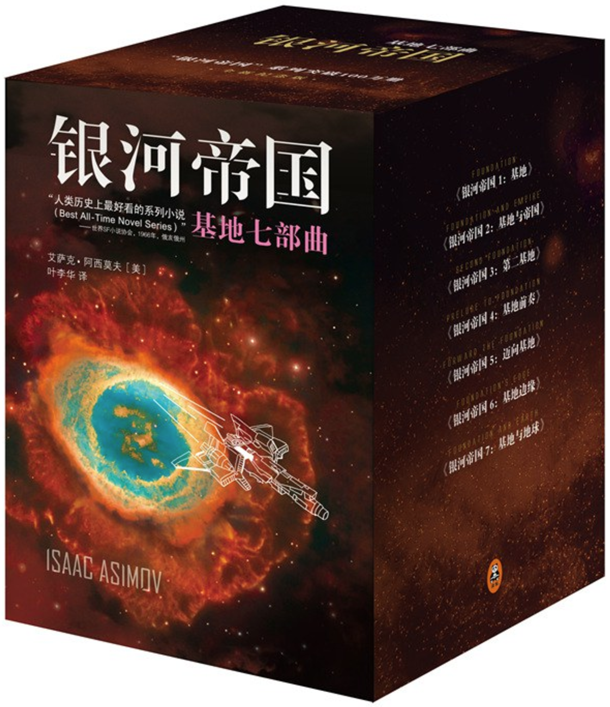
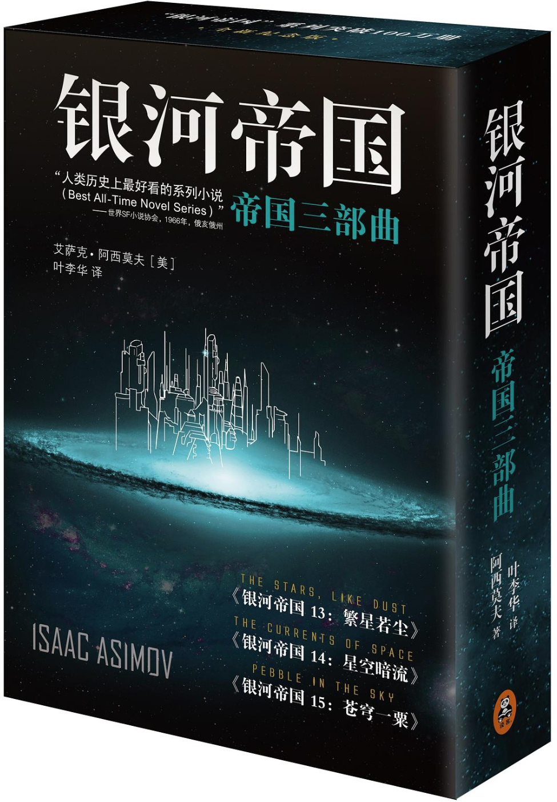
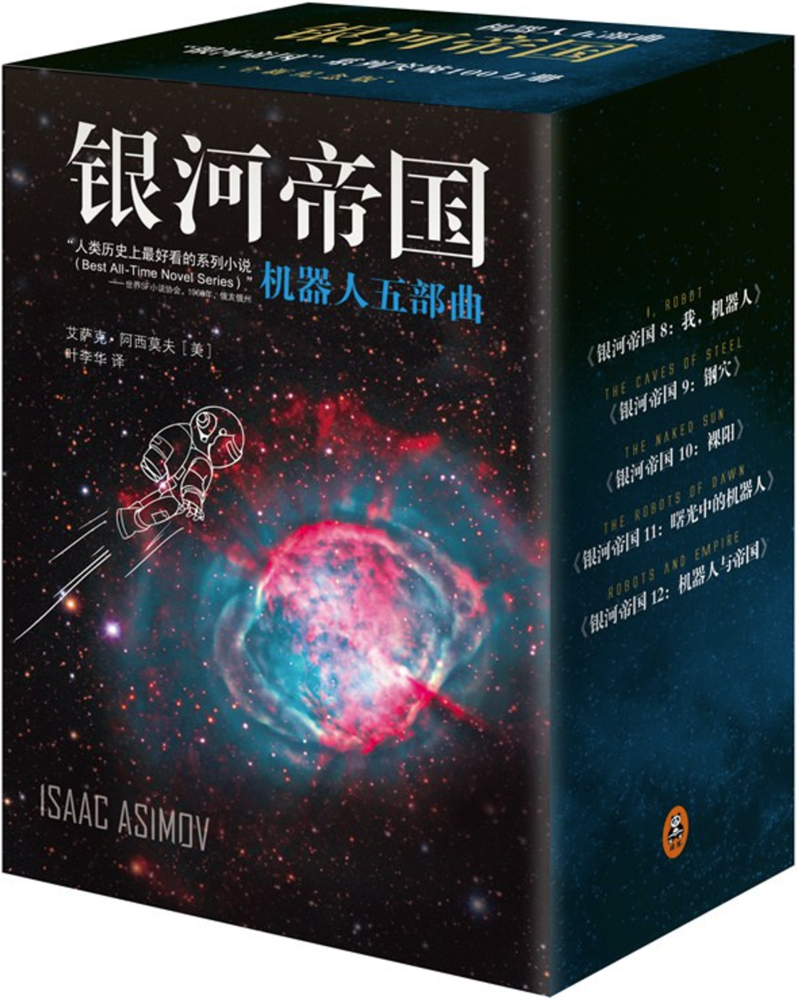

基地七部曲 Foundation Series
《银河帝国》是美国著名科幻作家艾萨克·阿西莫夫（Isaac Asimov）的重要系列作品之一。该系列是阿西莫夫“未来史”设定的一部分，与《机器人》系列和《基地》系列共同构建了一个庞大的科幻宇宙。故事围绕人类在银河系扩张和统治的过程展开，描绘了未来几千年的银河帝国历史。
《银河帝国》系列通过描绘人类在银河系中的扩张、统治和衰落，探讨了文明的兴衰、科技的进步以及人类社会的复杂性。阿西莫夫通过这一系列作品，展示了他对未来社会的深刻洞察和对人类命运的思考。

帝国三部曲 Empire Series
《银河帝国三部曲》实际上是艾萨克·阿西莫夫的三部独立科幻小说，分别是《繁星若尘》、《星空暗流》和《宇宙帝国》。它们虽然故事情节相对独立，但都设定在阿西莫夫构建的“银河帝国”宇宙中，描绘了人类在银河系扩张和帝国兴盛时期的社会与科技发展。
这些作品描绘了从地球的边缘化到银河帝国的兴衰，以及个人与社会在宏大历史中的碰撞，是阿西莫夫“未来史”宇宙的重要组成部分。

机器人五部曲 Robot Series
《机器人》系列是阿西莫夫“未来史”设定的重要组成部分，探讨了机器人与人类社会的关系。通过一系列短篇小说和长篇小说，阿西莫夫提出了著名的机器人三定律，并探讨了机器人伦理、人工智能和人类社会的未来。
《机器人》系列通过描绘机器人在未来社会中的角色，探讨了科技进步对人类社会的影响，以及人类与人工智能之间的复杂关系。阿西莫夫通过这一系列作品，展示了他对未来科技和人类社会的深刻洞察。
